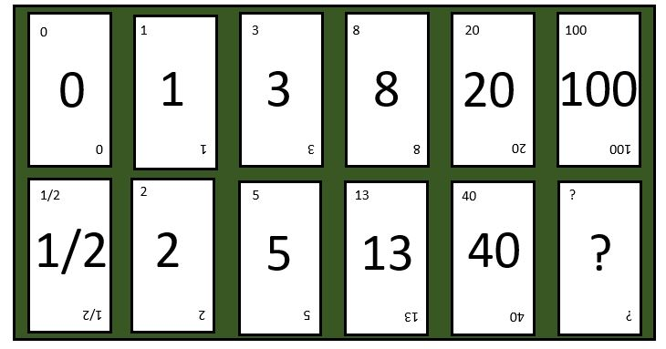
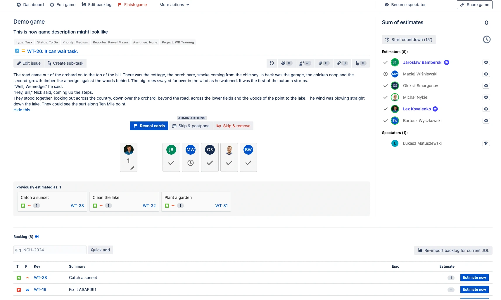

Planning Poker
Técnica Planning Poker
Técnica de Estimativa Ágil: Planning Poker
O Planning Poker é uma técnica de estimativa ágil que combina discussão, consenso e jogo para avaliar o esforço ou tamanho relativo das histórias de usuário em desenvolvimento de software. Esta técnica promove a participação ativa de todos os membros da equipe e busca evitar que as estimativas de indivíduos sejam influenciadas pelos outros, resultando em avaliações mais precisas.
Procedimento Detalhado do Planning Poker
1. Distribuição de Cartas: Cada membro da equipe recebe um conjunto de cartas com números, muitas vezes seguindo a sequência de Fibonacci (1, 2, 3, 5, 8, 13, 21, etc.) para representar estimativas de esforço. Esses números refletem o esforço crescente e a incerteza nas tarefas maiores.
O Planning Poker é uma técnica de estimativa ágil que combina discussão, consenso e jogo para avaliar o esforço ou tamanho relativo das histórias de usuário em desenvolvimento de software. Esta técnica promove a participação ativa de todos os membros da equipe e busca evitar que as estimativas de indivíduos sejam influenciadas pelos outros, resultando em avaliações mais precisas.
Procedimento Detalhado do Planning Poker
1. Distribuição de Cartas: Cada membro da equipe recebe um conjunto de cartas com números, muitas vezes seguindo a sequência de Fibonacci (1, 2, 3, 5, 8, 13, 21, etc.) para representar estimativas de esforço. Esses números refletem o esforço crescente e a incerteza nas tarefas maiores.

2. Apresentação e Discussão das Histórias: O Product Owner ou proprietário do backlog apresenta cada história de usuário, oferecendo detalhes e esclarecimentos. A equipe discute a história, considerando todos os aspectos e tarefas necessárias para sua conclusão.
3. Processo de Estimativa:
• Votação Secreta: De forma independente, cada membro da equipe escolhe uma carta que representa sua estimativa de esforço para a história.
• Revelação das Cartas: As cartas são reveladas simultaneamente para evitar influências entre os membros.
• Discussão e Consenso: Em caso de discrepâncias significativas nas estimativas, membros com estimativas extremas (mais altas e mais baixas) explicam seus pontos de vista. A equipe então discute essas perspectivas e realiza novas rodadas de votação até que um consenso seja alcançado ou opte-se por uma média. Cartas especiais como "pausa" e "não sei" podem ser usadas para indicar exaustão ou falta de conhecimento suficiente para estimar.
4. Estimativa Final e Repetição do Processo: A estimativa final de cada história é determinada pelo valor que aparece com mais frequência ou pela média dos valores. O processo é repetido para cada história até que todas as histórias previstas na Sprint sejam estimadas.
5. Uso de Cartas Especiais: Cartas como "pausa" e "não sei" podem ser utilizadas para indicar exaustão ou falta de conhecimento suficiente para estimar.
3. Processo de Estimativa:
• Votação Secreta: De forma independente, cada membro da equipe escolhe uma carta que representa sua estimativa de esforço para a história.
• Revelação das Cartas: As cartas são reveladas simultaneamente para evitar influências entre os membros.
• Discussão e Consenso: Em caso de discrepâncias significativas nas estimativas, membros com estimativas extremas (mais altas e mais baixas) explicam seus pontos de vista. A equipe então discute essas perspectivas e realiza novas rodadas de votação até que um consenso seja alcançado ou opte-se por uma média. Cartas especiais como "pausa" e "não sei" podem ser usadas para indicar exaustão ou falta de conhecimento suficiente para estimar.
4. Estimativa Final e Repetição do Processo: A estimativa final de cada história é determinada pelo valor que aparece com mais frequência ou pela média dos valores. O processo é repetido para cada história até que todas as histórias previstas na Sprint sejam estimadas.
5. Uso de Cartas Especiais: Cartas como "pausa" e "não sei" podem ser utilizadas para indicar exaustão ou falta de conhecimento suficiente para estimar.
Impacto no Gerenciamento Ágil
Planejamento de Sprint mais Eficaz: Com estimativas mais precisas, a equipe pode planejar sprints de forma mais eficiente, ajustando a carga de trabalho para corresponder à sua capacidade real.
Melhoria Contínua: O Planning Poker promove uma cultura de melhoria contínua. Com o tempo, as equipes se tornam mais habilidosas em estimar e entender a complexidade das tarefas.
Benefícios do Planning Poker:
• Participação e Engajamento: Promove a participação ativa e o engajamento de toda a equipe nas estimativas.
• Comunicação e Esclarecimento: Melhora a comunicação e ajuda a equipe a esclarecer detalhes e dúvidas sobre cada história.
• Precisão e Consenso: Estimativas coletivas tendem a ser mais precisas, refletindo um entendimento comum e consenso da equipe.
• Aprendizado e Adaptação: A equipe aprende e se adapta ao longo do tempo, aprimorando suas habilidades de estimativa com base nas experiências anteriores.
Benefícios do Planning Poker:
• Participação e Engajamento: Promove a participação ativa e o engajamento de toda a equipe nas estimativas.
• Comunicação e Esclarecimento: Melhora a comunicação e ajuda a equipe a esclarecer detalhes e dúvidas sobre cada história.
• Precisão e Consenso: Estimativas coletivas tendem a ser mais precisas, refletindo um entendimento comum e consenso da equipe.
• Aprendizado e Adaptação: A equipe aprende e se adapta ao longo do tempo, aprimorando suas habilidades de estimativa com base nas experiências anteriores.
Conclusão
O Planning Poker é mais do que uma técnica de estimativa; é uma ferramenta de construção de equipe e comunicação que se alinha com os valores ágeis de colaboração, transparência e adaptabilidade. Ele incentiva a reflexão e a aprendizagem contínuas, tornando-se uma prática inestimável para equipes ágeis que buscam melhorar constantemente suas habilidades e resultados.
7 boas práticas para estimar tempo
1. Quebre o projeto em etapas menores e menos complexas
2. Considere o grau de incerteza, não apenas tempo
3. Não estime sozinho, envolva a equipe
4. Documente as premissas adotadas e deixe claro as escolhas
5. Refine a estimativa ao longo do tempo
6. Seja realista, sem falsos otimismos
7. Use projetos passados como referência
2. Considere o grau de incerteza, não apenas tempo
3. Não estime sozinho, envolva a equipe
4. Documente as premissas adotadas e deixe claro as escolhas
5. Refine a estimativa ao longo do tempo
6. Seja realista, sem falsos otimismos
7. Use projetos passados como referência
Erros e consequências de estimativas ruins
Otimismo Excessivo: Subestimar a complexidade das tarefas e ignorar potenciais obstáculos e riscos.
Falta de Dados Históricos: Não considerar o histórico de projetos anteriores para informar estimativas atuais.
Pressão para Reduzir Prazos: Cedendo à pressão de stakeholders para entregar mais em menos tempo.
Ignorar Dependências: Falhar em considerar as dependências entre tarefas e equipes.
Falta de Expertise Técnica: Não envolver especialistas técnicos no processo de estimativa.
Estimativas "One-Size-Fits-All": Usar uma abordagem única para estimar todos os tipos de tarefas, sem considerar as nuances específicas de cada uma.
Falta de Dados Históricos: Não considerar o histórico de projetos anteriores para informar estimativas atuais.
Pressão para Reduzir Prazos: Cedendo à pressão de stakeholders para entregar mais em menos tempo.
Ignorar Dependências: Falhar em considerar as dependências entre tarefas e equipes.
Falta de Expertise Técnica: Não envolver especialistas técnicos no processo de estimativa.
Estimativas "One-Size-Fits-All": Usar uma abordagem única para estimar todos os tipos de tarefas, sem considerar as nuances específicas de cada uma.
Consequências de Estimativas Ruins
Atrasos no Projeto
Perda de Confiança: Stakeholders podem perder a confiança na equipe de projeto.
Impacto Financeiro: Atrasos podem levar a custos adicionais e perda de receitas previstas.
Comprometimento da Qualidade
Entrega de Produtos Inferiores: Sob pressão para atender a prazos irrealistas, a equipe pode cortar cantos, comprometendo a qualidade.
Defeitos e Bugs: A probabilidade de introduzir defeitos e bugs é maior quando a equipe está apressada.
Burnout: A equipe pode enfrentar burnout devido a prazos apertados e carga de trabalho excessiva.
Moral Baixo: A moral da equipe pode ser prejudicada, levando a um ambiente de trabalho estressante e insatisfatório.
Reputação Danificada
Clientes Insatisfeitos: Clientes insatisfeitos podem expressar seu descontentamento publicamente, prejudicando a reputação da organização.
Perda de Negócios Futuros: Uma reputação de falha na entrega pode resultar na perda de oportunidades de negócios futuros.
Perda de Confiança: Stakeholders podem perder a confiança na equipe de projeto.
Impacto Financeiro: Atrasos podem levar a custos adicionais e perda de receitas previstas.
Comprometimento da Qualidade
Entrega de Produtos Inferiores: Sob pressão para atender a prazos irrealistas, a equipe pode cortar cantos, comprometendo a qualidade.
Defeitos e Bugs: A probabilidade de introduzir defeitos e bugs é maior quando a equipe está apressada.
Burnout: A equipe pode enfrentar burnout devido a prazos apertados e carga de trabalho excessiva.
Moral Baixo: A moral da equipe pode ser prejudicada, levando a um ambiente de trabalho estressante e insatisfatório.
Reputação Danificada
Clientes Insatisfeitos: Clientes insatisfeitos podem expressar seu descontentamento publicamente, prejudicando a reputação da organização.
Perda de Negócios Futuros: Uma reputação de falha na entrega pode resultar na perda de oportunidades de negócios futuros.
Para evitar os erros e consequências das estimativas ruins, é vital
Envolver a Equipe Certa: Certifique-se de que as pessoas com o conhecimento técnico adequado estejam envolvidas no processo de estimativa.
Usar Dados Históricos: Use dados de projetos anteriores para informar suas estimativas.
Comunicar-se Abertamente: Encoraje uma comunicação aberta e honesta sobre os desafios e riscos potenciais.
Revisar e Ajustar: Revise e ajuste regularmente as estimativas à medida que o projeto avança e mais informações estão disponíveis.
Criar Story Points: segmente sua task em etapas menores. Descreva a atividade a ser realizada e quais são as informações, as pessoas e os dados disponíveis que você tem para aquela etapa.
Usar Dados Históricos: Use dados de projetos anteriores para informar suas estimativas.
Comunicar-se Abertamente: Encoraje uma comunicação aberta e honesta sobre os desafios e riscos potenciais.
Revisar e Ajustar: Revise e ajuste regularmente as estimativas à medida que o projeto avança e mais informações estão disponíveis.
Criar Story Points: segmente sua task em etapas menores. Descreva a atividade a ser realizada e quais são as informações, as pessoas e os dados disponíveis que você tem para aquela etapa.
O que devemos considerar na hora darmos nossa estimativa
1. Responsável e Especialidade
• Especialidade e maestria do responsável na execução da tarefa.
• Autonomia do responsável e dependência de outras pessoas ou áreas.
2. Detalhes da Tarefa
• Nome, link e objetivo da tarefa: Questões que a tarefa pretende responder ou resolver.
• Motivação da demanda e sua priorização: Grau de importância para o negócio.
• Retorno do Investimento: Potencial retorno rápido ou de médio/longo prazo.
• Relação com o produto e alinhamento com o planejamento estratégico anual.
• Processos/Etapas necessárias para execução e escopo esperado de cada subtask.
3. Análise de Esforço e Tempo
• Estimativa de tempo: Quantidade de dias de trabalho na sprint.
• Frequência média de entrega de valor pelo responsável.
• Riscos potenciais e incertezas técnicas associadas à tarefa.
• Flexibilidade e possíveis mudanças no escopo da tarefa.
4. Dinâmica de Trabalho e Colaboração
• Fluxo de trabalho: Ordem de execução das tasks e interdependências.
• Interdisciplinaridade e necessidade de liderança: Áreas de interesse no projeto ou na demanda.
• Comunicação e colaboração necessárias entre membros da equipe ou departamentos.
• Impacto na cultura e moral da equipe.
5. Considerações Adicionais
• Stakeholders: Quem são os responsáveis ou interessados.
• Documentação: Disponibilidade de documentação interna ou externa relevante.
• Melhoria contínua: Necessidade de observação contínua e criação de card de melhoria.
• Automação e ferramentas envolvidas na execução.
• Padrões existentes e aprendizado necessário para a execução da tarefa.
• Custo de oportunidade e impacto na satisfação do cliente.
• Sustentabilidade, manutenção a longo prazo e conformidade com regulamentações.
6. Conclusão da Estimativa
• Reunir todas as informações e refletir sobre a complexidade e esforço requeridos.
• Determinar a nota final de estimativa, considerando todos os fatores acima.
• Especialidade e maestria do responsável na execução da tarefa.
• Autonomia do responsável e dependência de outras pessoas ou áreas.
2. Detalhes da Tarefa
• Nome, link e objetivo da tarefa: Questões que a tarefa pretende responder ou resolver.
• Motivação da demanda e sua priorização: Grau de importância para o negócio.
• Retorno do Investimento: Potencial retorno rápido ou de médio/longo prazo.
• Relação com o produto e alinhamento com o planejamento estratégico anual.
• Processos/Etapas necessárias para execução e escopo esperado de cada subtask.
3. Análise de Esforço e Tempo
• Estimativa de tempo: Quantidade de dias de trabalho na sprint.
• Frequência média de entrega de valor pelo responsável.
• Riscos potenciais e incertezas técnicas associadas à tarefa.
• Flexibilidade e possíveis mudanças no escopo da tarefa.
4. Dinâmica de Trabalho e Colaboração
• Fluxo de trabalho: Ordem de execução das tasks e interdependências.
• Interdisciplinaridade e necessidade de liderança: Áreas de interesse no projeto ou na demanda.
• Comunicação e colaboração necessárias entre membros da equipe ou departamentos.
• Impacto na cultura e moral da equipe.
5. Considerações Adicionais
• Stakeholders: Quem são os responsáveis ou interessados.
• Documentação: Disponibilidade de documentação interna ou externa relevante.
• Melhoria contínua: Necessidade de observação contínua e criação de card de melhoria.
• Automação e ferramentas envolvidas na execução.
• Padrões existentes e aprendizado necessário para a execução da tarefa.
• Custo de oportunidade e impacto na satisfação do cliente.
• Sustentabilidade, manutenção a longo prazo e conformidade com regulamentações.
6. Conclusão da Estimativa
• Reunir todas as informações e refletir sobre a complexidade e esforço requeridos.
• Determinar a nota final de estimativa, considerando todos os fatores acima.
Exemplo disponibilizado pelo Atlassian
